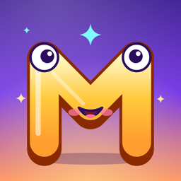
Merto Gaming: Çocuk Oyunları 2D
10 mini oyun, garaj ve Ebeveyn Köşesi
3–7 yaş · iPhone · iPad · Android
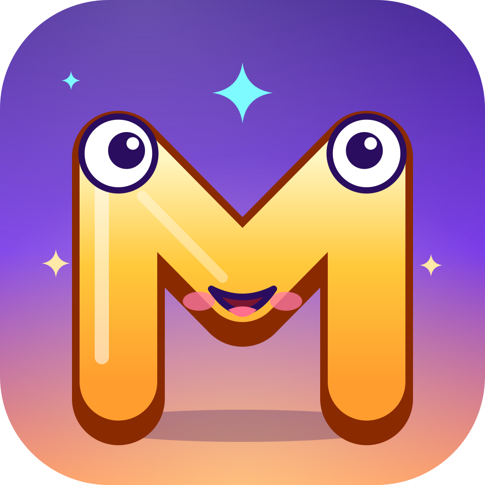
Reklam yok · Uygulama içi satın alma yok · Veri toplama yok
Merto Gaming oyunları küçük çocuklar için tasarlanır: büyük düğmeler, renkli çizimler ve neşeli müzikler sayesinde okuma bilmeyenler bile kolayca oynar. Oyunlar Türkçe ve İngilizce; cihazın dilinde açılır.

10 mini oyun, garaj ve Ebeveyn Köşesi
3–7 yaş · iPhone · iPad · Android
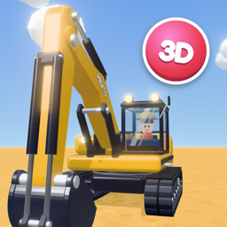
Yarıştan çiftliğe, dinozorlardan hafıza kartlarına 10 mini oyun tek uygulamada. Her oyunda kazanılan yıldızlar garajda araçları süslemek için kullanılır; oyun çarkı (🎮) ile istediğin an başka oyuna geçersin.
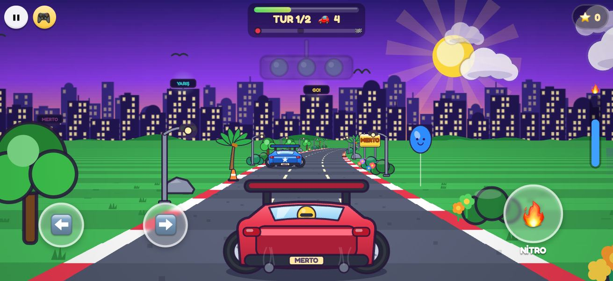
Şehrin virajlı yollarında, tepelerde ve tünellerde rakiplerle yarış. Nitroyu ateşle, öne geç ve bitiş çizgisine ilk sen ulaş!
Kontroller: ⬅️ ➡️ direksiyon · 🔥 NİTRO
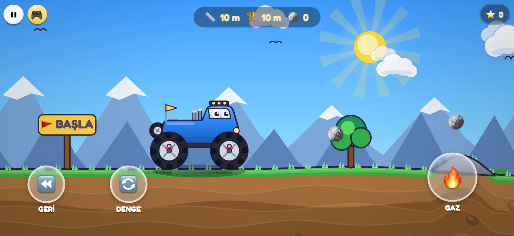
Yaylanan süspansiyonlu canavar kamyonla kayaların, kanyonun ve karlı zirvenin üstünden geç. Devrilmemek için dengeni koru, altınları topla.
Kontroller: ⏪ GERİ · 🔄 DENGE · 🔥 GAZ
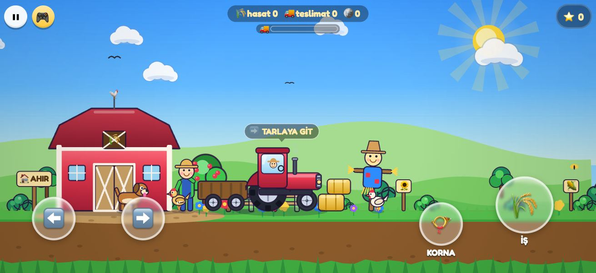
Tarlayı sür, tohum ek, sula ve hasadı topla; römorkla ahıra taşı. Tavuklar kaçışır, inek "möö" der.
Kontroller: ⬅️ ➡️ sür · 🌾 İŞ · 📯 KORNA
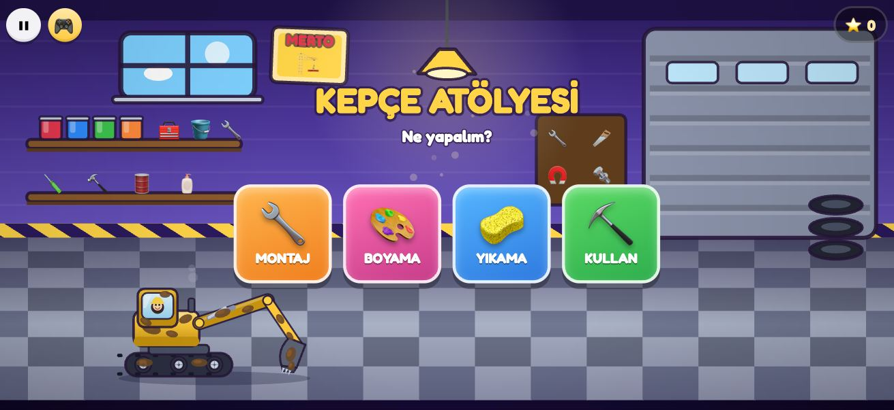
Dört bölümlü kepçe atölyesi: parçaları sürükleyip kepçeni monte et, parça parça boya ve çıkartma yapıştır, süngerle ve hortumla yıka, sonra kaz, hazine bul ve kamyona yükle.
Kontroller: sürükle · ⬅️ ➡️ · 🔼 KOL · 🔽 KAZ · 🪣 DÖK
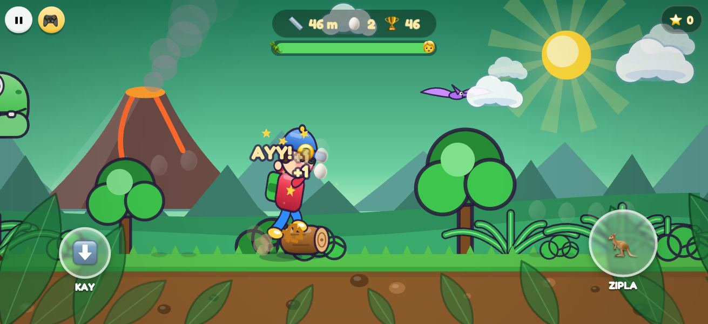
Sevimli bir T-Rex peşinde! Zıpla, kay ve yumurtaları topla. Seni yakalarsa gıdıklar.
Kontroller: 🦘 ZIPLA · ⬇️ KAY
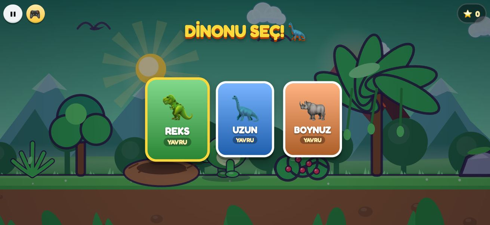
Kendi dinozorunu seç; yürü, kükre, yapraklarla besle ve büyüt. Gece ile gündüz değişirken yumurtaları yuvaya taşı.
Kontroller: ◀ ▶ · ⬆️ ZIPLA · 📣 KÜKRE · 🍃 YE
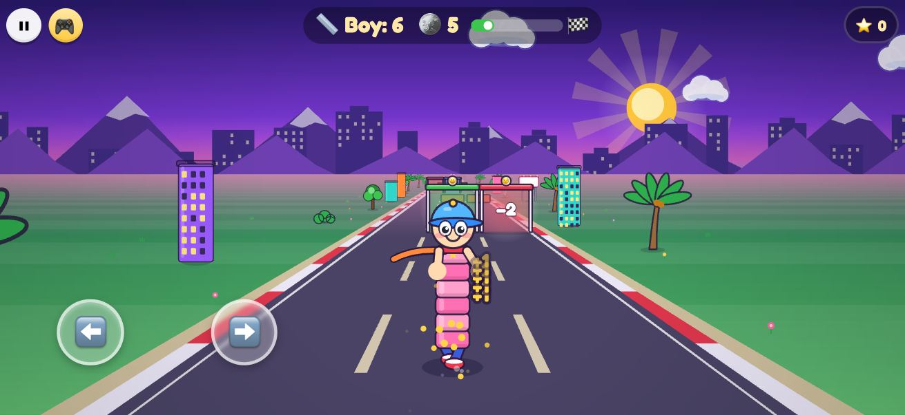
Üç şeritli yolda doğru kapıları seç: artı kapılar uzatır, eksi kapılar kısaltır. Kocaman ol, duvarları yık ve sondaki devi geç.
Kontroller: sürükle · ⬅️ ➡️
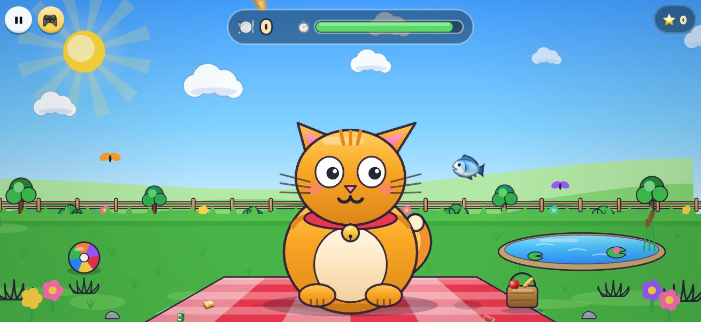
Gökten düşen yemekleri kediye yakalat ama brokoliden kaç! Kedinin komik suratlarına gül.
Kontroller: kediyi sürükle
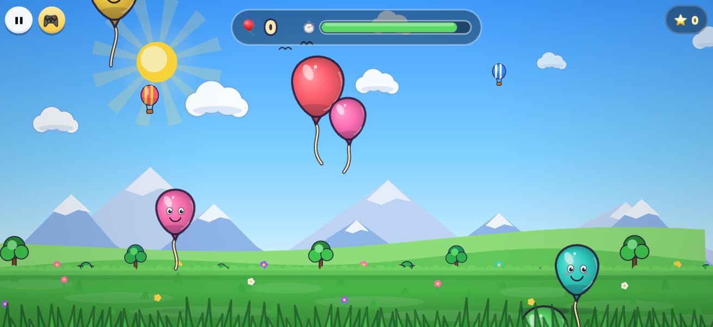
Renkli balonlara dokun ve patlat! Altın balonlarda yıldız saklı.
Kontroller: dokun
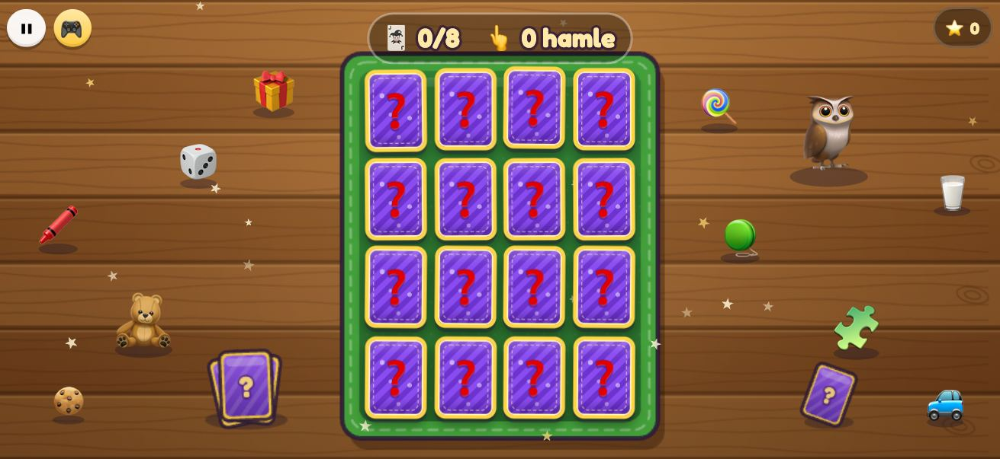
Taşıt kartlarını çevir, eşlerini bul ve hafızanı çalıştır. Ebeveyn Köşesi'nden fotoğraf eklendiyse bir kart çocuğunuzun yüzü olur.
Kontroller: kartlara dokun
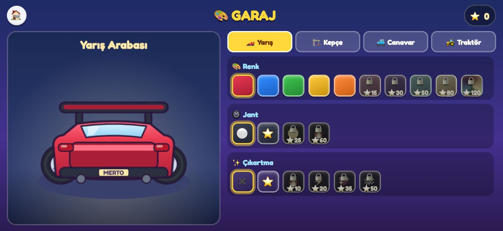
Oyunlarda kazandığın yıldızlarla arabanı, kepçeni ve kamyonunu boya ve süsle.
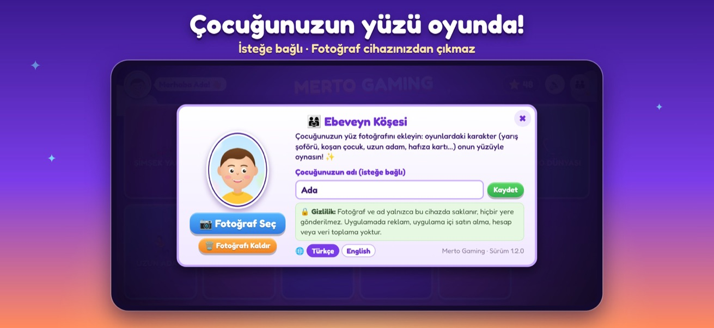
İsteğe bağlı: çocuğunuzun fotoğrafını ekleyin; yarış şoförü, uzun adam, koşan çocuk ve bir hafıza kartı onun yüzüyle oynasın. Adını yazarsanız menüde selamlanır.
Gerçek zamanlı gölgeler, fizik motoru ve kazılabilir arazi: bloklar gerçekten devrilir, toprak gerçekten kazılır. Ana menüde yüzen bir adadaki dönen platformda seçtiğin oyunun aracı durur; parmağınla çevirebilirsin, gökyüzü de oyunun saatine göre değişir.
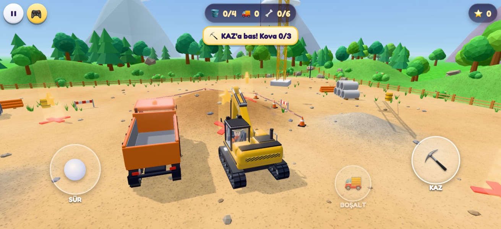
Paletli kepçeyi şantiyede sür. Toprak gerçekten kazılır: damperli kamyonu doldur, parlayan X işaretlerinin altından dinozor kemiği, hazine sandığı ve fosil yumurta çıkar.
Kontroller: joystick ile sür · ⛏️ KAZ · 🚚 BOŞALT
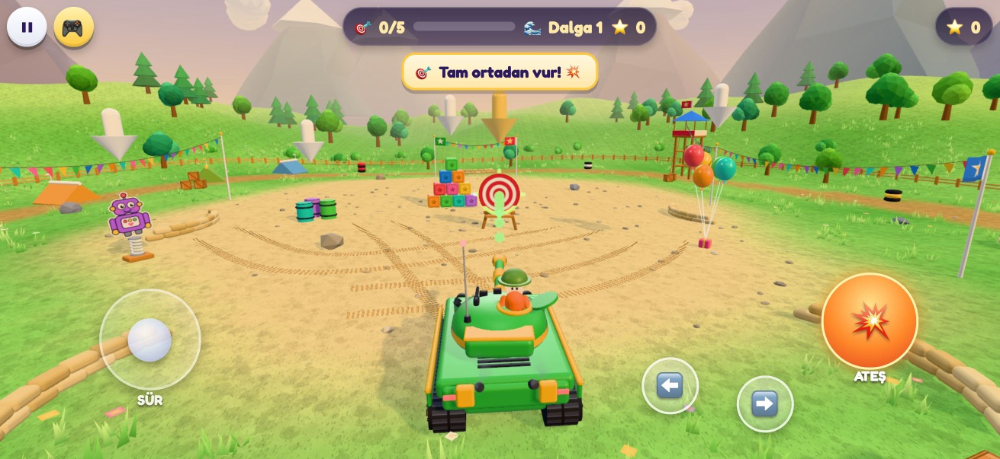
Oyuncak tankla eğitim alanında dalga dalga hedefler: fizikle devrilen blok kuleler, balonlar, karton robotlar, variller ve gong. Otomatik nişan yardımı küçüklere kolaylık sağlar.
Kontroller: joystick · ⬅️ ➡️ taret · 💥 ATEŞ
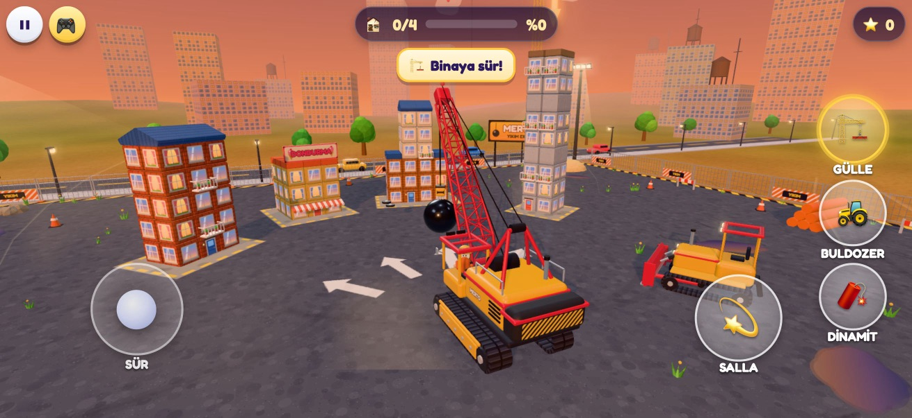
Tuğla tuğla kurulmuş binaları gülleli vinç, buldozer ve renkli dinamitle yık; toz bulutları yükselir, yıkım çubuğu dolar.
Kontroller: joystick · 💫 SALLA · 🏗️ / 🚜 / 🧨 araç seç
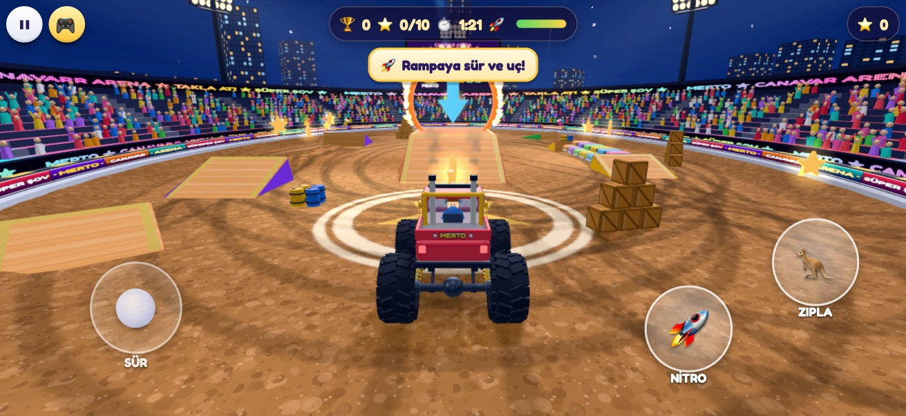
Gece stadyumunda projektörler ve tezahürat eşliğinde rampalardan uç, ateş çemberinden geç, hurda arabaları ez ve takla at; sonunda havai fişekler!
Kontroller: joystick · 🚀 NİTRO · 🦘 ZIPLA
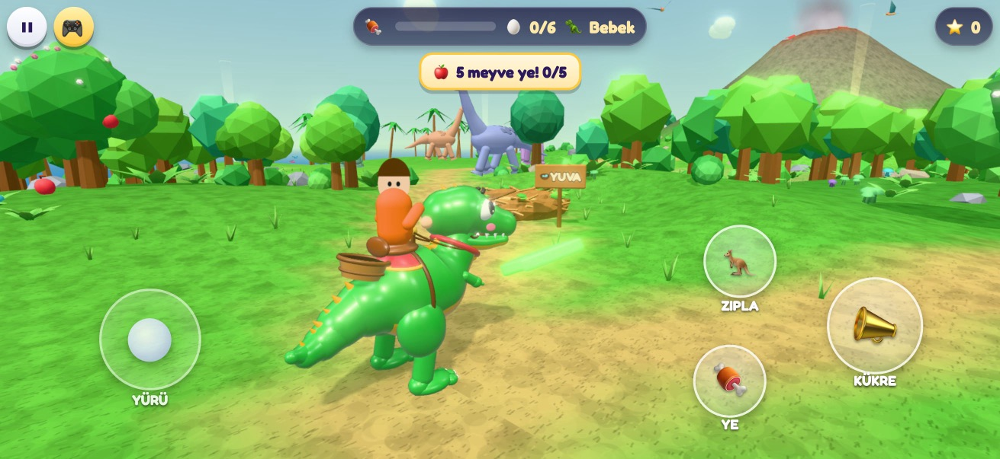
Sevimli T-Rex'ine binip tropik adayı gez: kükre, meyve ye ve büyü (Bebek → Genç → Kocaman). Altı gizli yumurtayı yuvaya getir, yavrular peşinden gelsin; gece-gündüz ve volkan.
Kontroller: joystick ile yürü · 📣 KÜKRE · 🦘 ZIPLA · 🍖 YE
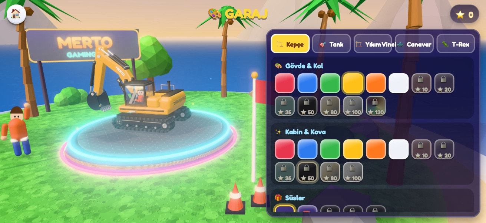
Kepçe, tank, yıkım vinci, canavar kamyon ve T-Rex için ana renk, detay rengi ve süsler: tepe lambası, bayrak, LED, taç, disko gülle, alev çıkartması, güneş gözlüğü… Altın, krom ve gökkuşağı boya yıldızla açılır.
Ayrıntılar: Gizlilik Politikası · Destek ve sık sorulan sorular